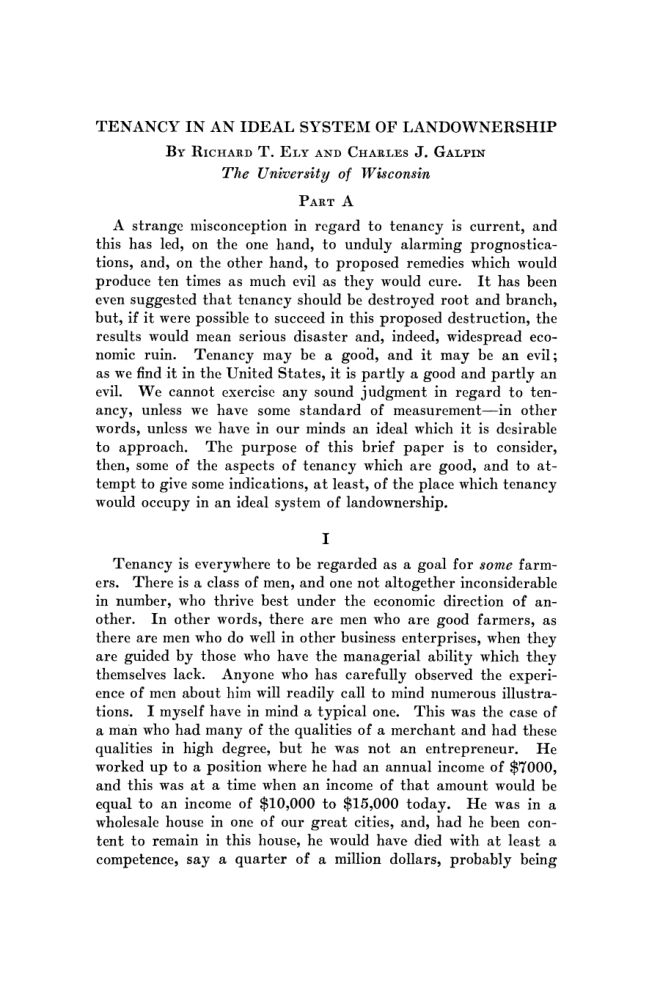

Richmond, 1918: economistas no serviço público e a reconstrução
Leitura: 7 min
Richmond, dezembro de 1918: Fisher pergunta a quem os economistas devem servir, Hamilton defende a economia institucional, e a reunião discute juros, ouro, custo de vida, controle de alimentos e terra.


Na noite de 27 de dezembro de 1918, no Jefferson Hotel de Richmond, Virgínia, a sessão dos discursos presidenciais foi presidida pelo governador Westmoreland Davis. Elwood Mead, da American Association for Agricultural Legislation, falou sobre o desenvolvimento rural planejado; Samuel McCune Lindsay, da American Association for Labor Legislation, sobre os próximos passos do seguro social. Irving Fisher, de Yale, presidente da American Economic Association, encerrou com um discurso sobre os economistas no serviço público.
O suplemento de março de 1919 reúne os textos e debates dos dois dias da reunião. Ela estava marcada para Cleveland e foi transferida no meio do ano para um lugar mais próximo de Washington, onde muitos sócios trabalhavam em órgãos de guerra. O armistício veio antes da reunião, e o programa, como disse Fisher, tratou sobretudo da reconstrução. O relatório da Comissão de Finanças de Guerra, debatido na sessão de tributação, saiu num segundo suplemento.
O que Fisher pedia aos economistas?
Fisher conta que só em Washington 120 sócios estiveram no serviço público durante a guerra e pergunta a quem os economistas devem servir. Responde: ao interesse geral, não a um país, classe ou região. Aponta a herança e o sistema de lucros como as duas chaves da distribuição da riqueza e propõe um meio de levar noções de economia ao grande público e um fundo de pesquisa administrado por trabalho, capital e economistas. O discurso tem página própria.
Quanto custa o capital próprio?
A sessão de contabilidade discutiu se os juros sobre o capital empregado entram no custo de fabricação. Clinton H. Scovell, contador de Boston, disse que sim, próprio ou emprestado, porque o uso de fábricas e estoques nunca é gratuito e a depreciação paga só o desgaste. Lewis H. Haney, da Federal Trade Commission, respondeu que custo contábil e custo econômico não se confundem e que juro sobre capital próprio seria um lançamento hipotético, sem saída de caixa.
O que a guerra fez com os juros, os preços e o ouro?
A previsão de que a guerra elevaria os juros falhou até 1916. David Friday, da New York University, atribuiu o fato a um salto do excedente da produção sobre o consumo; E. W. Kemmerer, de Princeton, à inflação de moeda e depósitos, e lembrou que os juros baixos dos títulos longos podem se revelar altos se a deflação vier. Royal Meeker, do Bureau of Labor Statistics, descreveu o índice de custo de vida em construção, e A. C. Miller, do Federal Reserve Board, defendeu liberar o ouro acumulado.
Fisher voltou ao seu plano de estabilizar o dólar, variando o peso de ouro que o resgata conforme um número-índice de preços. B. M. Anderson Jr. aceitou a ideia com limites de 2% a 2,25% ao ano e acordo internacional. J. E. Rovensky analisou o marco alemão, e o senador Robert L. Owen propôs manter o dólar ao par em todo o mundo.
O controle de guerra sobre os alimentos deveria ficar?
B. H. Hibbard, de Wisconsin, descreveu o controle exercido pela Food Administration por meio de licenças e concluiu que o governo quis controlar preços, não reformar a comercialização. W. F. Gephart, da Washington University, listou o que deveria ficar, da inspeção de perecíveis a uma nova lei de comércio leal. Na sessão de fixação de preços, G. F. Warren e T. N. Carver, de Cornell e Harvard, alertaram contra a fixação como política geral, e Lewis Cecil Gray descreveu o preço garantido do trigo.
“Tivemos uma sacudida, não uma regeneração.” (“We have had a shaking up, not a regeneration.”)
Quem deve ser dono da terra?
W. J. Spillman, com dados de 2.112 proprietários do Meio-Oeste, mediu a subida pela escada agrícola, do trabalho na fazenda paterna à propriedade. Richard T. Ely e Charles J. Galpin defenderam um lugar para o arrendamento num sistema ideal e analisaram a ocupação de 500 fazendas em Wisconsin. William Kent, da Tariff Commission, atacou o título de propriedade perpétua e propôs impostos sobre heranças cobrados em terra.
Que teoria a economia precisava?
A sessão conjunta com a American Sociological Society reuniu três críticas à teoria do valor. J. M. Clark quis subordinar a economia dos preços a uma economia social; William F. Ogburn usou a psicologia de Freud para fundamentar a interpretação econômica da história; e Walton H. Hamilton, de Amherst, defendeu a “economia institucional” como a única teoria econômica. O texto de Hamilton tem página própria.
Que economia serviria à paz e ao trabalho?
William Smith Culbertson propôs tratados gerais com a porta aberta nas colônias e comissões internacionais, e C. van Vollenhoven, de Leiden, sugeriu trocar o nome de economia política por economia internacional. No trabalho, Robert B. Wolf, da Emergency Fleet Corporation, pediu fábricas democráticas que liberem a iniciativa dos operários, e Edward Alsworth Ross propôs um salário legal de dispensa de duas semanas.
O que mais há na edição?
Completam o volume o programa, as atas das reuniões administrativas, que registram a eleição de Henry B. Gardner para presidente em 1919 e um prêmio para ensaios sobre o que um homem pode gastar, e os relatórios do secretário, do tesoureiro, da auditoria, do editor-gerente da revista e das comissões sobre o poder de compra da moeda e sobre o comércio exterior.
Na minha leitura
Na minha leitura, o fio de Richmond é a medição. Meeker não quer estabilizar o dólar sem um índice de custo de vida confiável; Friday precisa estimar a poupança nacional para explicar os juros; Spillman e Galpin contam fazendas e trajetórias; Warren deflaciona os preços fixados para saber o que eles valiam.
Mesmo a disputa sobre teoria passa por aí. Hamilton quer instituições no centro, e W. W. Stewart responde que a abordagem institucional só escapará de hipóteses vagas se medir os processos que descreve. A guerra deu aos economistas cargos e dados; a reunião discutiu o que fazer com os dois.
Glossário
- Food Administration
- órgão federal criado em 1917 para controlar a oferta, a distribuição e os preços dos alimentos durante a guerra.
- Juro sobre o investimento
- remuneração imputada ao capital próprio empregado numa empresa, além dos juros pagos sobre dívidas.
- Escada agrícola
- sequência de etapas do trabalho na fazenda da família à propriedade: assalariado, arrendatário, proprietário.
- Dólar estabilizado
- plano de Fisher de variar o peso de ouro que resgata o dólar conforme um índice de preços.
- Salário de dispensa
- pagamento devido ao trabalhador demitido sem culpa, proposto por Ross por duas semanas.
- Porta aberta
- igualdade de tratamento comercial a todas as nações numa colônia ou país.
- Excedente da produção sobre o consumo
- definição de Friday para a oferta anual de capital, ou poupança nacional.
- Preço básico
- nos termos de Gray, o preço fixado num ponto da cadeia, como o do trigo, distinto do controle de margens.
Artigos (43)
- Economists in Public Service: Annual Address of the President — Irving Fisher, Yale University; discurso presidencial (pp. 5–21). Fisher parte de um fato da guerra: só em Washington, 120 sócios da associação estavam no serviço público. Lembra que a associação nasceu, 33 anos antes, do conflito entre economistas formados na Alemanha, interessados em ação prática, e a velha guarda do laissez-faire, e que por isso o estatuto a proíbe de tomar posição partidária. Separa duas perguntas: se o economista deve servir e a quem deve servir. À primeira, diz que os reformadores deram a melhor resposta; à segunda, os conservadores: ao interesse geral, não a um país, classe, região ou interesse comercial. Defende a Liga das Nações também como alívio do custo dos armamentos. Na distribuição da riqueza, aponta duas chaves, a herança e o sistema de lucros, e sugere limitar o direito de testar e associar trabalhadores e o público aos riscos e à gestão das empresas. Termina pedindo um meio de levar noções de economia ao grande público e um fundo de pesquisa econômica administrado por trabalho, capital e economistas. JSTOR · ler o comentário
- Interest on Investment as a Factor in Manufacturing Costs — Clinton H. Scovell, contador público certificado, Boston (pp. 22–40). Scovell, contador de Boston, sustenta que os juros sobre todo o capital empregado numa fábrica, próprio ou emprestado, devem entrar no custo de fabricação. Parte da distinção dos economistas: o juro remunera o capital, e o lucro remunera a gestão, qualquer que seja o dono do capital. A contabilidade, diz, erra ao pensar em “dinheiro investido” em vez de olhar para os ativos físicos em uso, fábricas e estoques, cujo uso nunca é gratuito. Rebate o argumento de A. Lowes Dickinson de que todo juro é lucro, que chama de afirmação no lugar de prova, e o de que a depreciação já cobre o uso do capital: a depreciação paga o desgaste, não o uso do ativo intacto, como mostra o aluguel de um lote urbano, que não se deprecia e ainda assim se paga. Do lado prático, argumenta que o juro sobre o investimento tem de ser recuperado no preço de venda e que lançá-lo no custo permite comparar fábricas e produtos. Conclui que tratar o juro sobre o capital como retorno mínimo indiscutível limita o debate da divisão aos lucros, se houver. JSTOR
- Interest on Investment as a Manufacturing Cost Factor--Discussion — Lewis H. Haney, Federal Trade Commission (pp. 41–46). Haney responde a Scovell que custo econômico e custo contábil não se confundem. O contador lida com uma empresa e com o curto prazo; o economista, com a sociedade e com períodos longos. O dono não paga juros pelo próprio capital, ao passo que paga salários e aluguéis, e essa saída efetiva de caixa é decisiva para a contabilidade. Conclui que o juro só deve entrar no custo quando for pago, de fato, a terceiros sem ligação com o negócio e independentemente dos lucros; para comparações internas, admite estimativas, desde que tratadas como hipotéticas. JSTOR
- Effect of Government Control on Marketing Methods and Costs — B. H. Hibbard, University of Wisconsin (pp. 47–55). Hibbard apresenta um esboço preliminar do trabalho da Comissão de Mercados, presidida por L. D. H. Weld. Começa pelas duas visões anteriores à guerra: a dos reformadores, para quem a comercialização era um caos ou um roubo, e a do laissez-faire, para quem ela se justificava por si. Com a entrada na guerra, em 1917, a Food Administration e o Bureau of Markets passaram a controlar as mercadorias, os preços e margens e os próprios processos do mercado, por meio de licenças impostas ao comércio atacadista e aos varejistas com movimento anual de US$ 100.000. O controle foi quase completo no trigo, na farinha, no açúcar, no carvão e na lã, e parcial na carne e nos laticínios; a facilidade dependia de quantas mãos o produto atravessava. Entre os efeitos, aponta a entrada dos agricultores na política, com a sensação de não terem sido bem tratados nos preços do trigo. Conclui que o governo quis controlar preços de bens essenciais, não reformar a comercialização, e que alguns subprodutos merecem ficar. JSTOR
- Effect of Government Control on Marketing Methods and Costs--Discussion — James E. Boyle, Cornell University, e Guy C. Smith, Connecticut Agricultural College (pp. 56–60). Boyle adverte que a opinião sobre o controle depende da informação disponível e que muito dela vinha da publicidade oficial; dá o exemplo de um artigo de revista sobre o controle do comércio de grãos, reimpresso como boletim do governo. Propõe uma espécie de auditoria independente do controle, como a que um contador faz para os acionistas de uma empresa. Smith julga cedo para medir os efeitos, retoma a frase de Hibbard sobre a sacudida sem regeneração, trata da distribuição do leite e conclui que o maior efeito foi educativo: mostrar a todos as etapas da distribuição. JSTOR
- Provisions of the Food Act and Activities which should be made Permanent — W. F. Gephart, Washington University (pp. 61–70). Gephart observa que a lei que criou a Food Administration previa poucas das atividades que ela de fato assumiu, e que as mais duradouras foram justamente as imprevistas. Divide o trabalho em regulação da distribuição e regulação de preços. Na distribuição, o açúcar e os cereais foram repartidos por zonas, com economia de transporte, e o comércio de perecíveis foi licenciado: o consignatário não podia mais recusar mercadoria do padrão comprado quando o preço caía, sob pena de perder a licença. Nos preços, a lei não dava poder de fixá-los, mas a proibição da especulação abusiva, as licenças e os acordos com grupos do comércio produziram amplo controle de margens. Propõe tornar permanentes a inspeção e o serviço de notícias de mercado, o limite às revendas, a regulação dos frigoríficos de armazenagem, a supervisão do leite, uma nova lei de comércio leal e a fiscalização das bolsas de produtos. A lição mais importante, diz, é a cooperação entre governo e associações empresariais, sob supervisão pública. JSTOR
- Provisions of the Food Act and Activities which should be made Permanent--Discussion — Ray B. Westerfield, H. R. Tosdal, E. G. Nourse, L. C. Gray, Guy C. Smith e Paul D. Converse (pp. 71–78). Westerfield acha moderadas as propostas de Gephart, que confiariam funções à Interstate Commerce Commission, à Federal Trade Commission, ao Bureau of Markets e ao Departamento de Agricultura. Tosdal concorda e destaca a dificuldade de definir o que é comércio leal. Nourse discorda de Westerfield sobre as recusas de mercadoria, que este estimava em não mais de 1% do comércio. Gray não quer manter a proibição de revendas dentro do comércio. Smith informa que, em Connecticut, a Food Administration usou a inspeção do Bureau of Markets. Converse relata que as regras quase acabaram com a especulação no mercado de alimentos de Nova York. JSTOR
- The War and the Supply of Capital — David Friday, New York University (pp. 79–93). Friday parte de uma previsão que falhou: economistas e banqueiros esperavam que a guerra elevasse os juros nos Estados Unidos, porque a Europa deixaria de emprestar e passaria a tomar capital. A Europa de fato retirou do país entre cinco e seis bilhões de dólares em 1915 e 1916, e as fábricas americanas se expandiram como nunca, mas no fim de 1916 os juros continuavam baixos. A explicação, diz, é que a oferta de capital, definida como o excesso da produção sobre o consumo, cresceu enormemente, sem aumento de abstinência e sem queda do padrão de vida. Com estatísticas do censo de riqueza e de outras fontes, estima esse excedente em US$ 6,5 bilhões em 1913, US$ 9 bilhões em 1915, US$ 14,5 bilhões em 1916 e US$ 18 bilhões em 1917; a poupança teria passado de cerca de 20% da renda em 1913 para 30% em 1918. Conclui que os feitos das finanças de guerra se apoiaram nesse excedente, que a abstinência não explica as flutuações da oferta de capital e que, em fases de lucros crescentes, não é o juro alto que estimula a poupança. JSTOR
- The War and the Supply of Capital--Discussion — Hermann F. Arens, Elisha M. Friedman e Simon Litman (pp. 94–95). Friday admite, na discussão, que o aumento da produção veio dos preços altos dos produtos em relação aos custos. Arens pergunta se esse ritmo se manteria num mercado em queda; Friday responde que só com algum arranjo que protegesse os empresários contra a ruína por prejuízo. Friedman contesta a estimativa de poupança: há dupla contagem entre investimentos e reservas, lucros contábeis inflados pelos estoques, e títulos do governo comprados com empréstimos bancários. Litman diz que a questão relevante é a proporção da renda nacional poupada, não o volume absoluto. JSTOR
- The War and Interest Rates — E. W. Kemmerer, Princeton University (pp. 96–107). Kemmerer divide a taxa de juros de mercado em juro puro, prêmio de risco e custo administrativo, e mostra por que se esperava que a guerra elevasse os três: o mundo destruía capital, sacrificava o futuro ao presente e acumulava dívidas e papel-moeda. Com uma tabela trimestral de 1913 a 1918, de empréstimos à vista, papel comercial e títulos ferroviários, aponta três fatos: depois de um salto nos primeiros meses da guerra, quando a bolsa de Nova York ficou fechada por quatro meses, as taxas ficaram baixas até o fim de 1916; subiram a partir de 1917; e, desde o início de 1918, os juros de curto prazo foram mantidos perto de 6% por uma comissão de bancos de Nova York ligada aos empréstimos da Liberdade. Atribui as taxas baixas de 1915 e 1916 sobretudo à inflação de moeda e depósitos. Acrescenta que os juros baixos dos títulos longos são só nominais: se a deflação esperada vier, os devedores pagarão em dólares mais valiosos do que tomaram. Diz que não aprova nem condena a política, só a explica. JSTOR
- The Possibility of Compiling an Index of the Cost of Living — Royal Meeker, U.S. Bureau of Labor Statistics (pp. 108–117). Meeker começa definindo o custo de vida como a relação entre o preço do trabalho e os preços do que se consome, não como o nível dos preços: o que causa transtorno é a mudança desse nível. O plano de Fisher para estabilizar o dólar depende, diz, de um índice de custo de vida razoavelmente preciso, e um índice de atacado seria inadequado para isso. O índice de varejo publicado pelo Bureau of Labor Statistics cobre só alimentos, que passam de 40% do orçamento das famílias de operários de estaleiros, e Meeker não quer estabilizar o dólar sobre menos da metade do gasto familiar. Descreve então o levantamento do Bureau: orçamentos familiares obtidos por entrevista, contas diárias de despesa mantidas com ajuda de departamentos de economia doméstica e preços de varejo de artigos descritos com precisão. Rejeita o método do questionário, usado num levantamento inglês, e diz confiar nos dados reunidos pelos agentes do Bureau. JSTOR
- The Possibility of Compiling an Index of the Cost of Living--Discussion — Irving Fisher e Simon Litman (pp. 118–119). Fisher mostra dois gráficos: um compara a moeda em circulação e nos bancos com o índice do Bureau of Labor Statistics e com dois índices especiais de mercadorias mais sensíveis, de cerca de 200 artigos para o país e 70 para Nova York; outro traz os preços em oito guerras. Litman responde que gráficos de moeda e preços mostram fenômenos simultâneos, não causas, e lembra outros fatores da alta. Acrescenta que um índice de custo de vida precisa considerar a substituição de bens quando os preços sobem. JSTOR
- Securing the Initiative of the Workman: Industrial and National Organic Unity a Necessity for Developing Individual Initiative — Robert B. Wolf, engenheiro, Emergency Fleet Corporation (pp. 120–131). Wolf, engenheiro e industrial, atribui a agitação operária ao desvio do instinto criativo do trabalhador para fins destrutivos, provocado pela forma repressiva da maioria das organizações industriais. O remédio seria democratizar a indústria, dando aos trabalhadores voz na definição das condições de trabalho. A capacidade criativa, diz, não se restringe aos poucos que dirigem as empresas, como provam os líderes industriais vindos das fileiras; liderar é diferente de mandar, e o lema “ensine, não mande” se espalha pelas fábricas. Descreve fábricas que fornecem aos operários registros do progresso de suas próprias operações e explicam a relação de cada tarefa com o produto final, em alguns casos em acordo com os sindicatos. Divide a unidade industrial em suprimento, produção e administração, e propõe aplicar o mesmo princípio à organização do governo, com associações de ofícios e da indústria representadas na função de planejamento. Reconhece que a solução depende de evolução gradual. JSTOR
- A Legal Dismissal Wage — Edward Alsworth Ross, University of Wisconsin (pp. 132–136). Ross parte do que viu na Rússia: uma lei antiga obrigava o patrão a pagar ao empregado demitido duas semanas além do contrato; depois da revolução, houve acordos de um mês, e em Baku cerca de cem empresas de petróleo combinaram com seus 70.000 empregados um mês de salário por ano de serviço. Propõe que, nos Estados Unidos, o trabalhador com pelo menos seis meses na empresa tenha direito legal a duas semanas de salário quando demitido sem culpa. Detalha as regras: nada para quem se demite ou é demitido por falta grave; conselhos locais com um representante dos empregados, um dos patrões e um indicado pela comissão industrial do estado; greves e locautes não contam como demissão; corte salarial abaixo do salário corrente e rebaixamento contam. Argumenta que a medida reduziria a rotatividade, que chama de escandalosa: 57 fábricas de Detroit contrataram e dispensaram duas vezes e meia o número de empregados que mantinham, e a contratação de 22.031 empregados desnecessários em doze fábricas custou um milhão de dólares. JSTOR
- After-War Readjustment: Liberating Gold — A. C. Miller, Federal Reserve Board (pp. 137–145). Miller começa pela queda do valor do ouro: medido pelos preços nos principais mercados, perdeu cerca de metade do poder de compra desde o início da guerra, enquanto a produção caía, 7% em 1917 e 11% estimados em 1918. Rejeita as propostas de estimular a mineração com isenção de impostos, prêmios ou redução do conteúdo de ouro das moedas. Atribui a alta de preços em parte à escassez e em parte à abundância artificial de moeda: o crédito bancário cresceu de 40% a 50% em quatro anos, e cerca de seis bilhões de dólares em títulos de guerra ainda estavam nos bancos. Mostra que as reservas de ouro dos quinze principais bancos emissores subiram de US$ 3.646 milhões em julho de 1914 para US$ 6.258 milhões em novembro de 1918, e prevê que o padrão-ouro ficará dissociado da circulação de moedas de ouro, tornando-se um problema de gestão de reservas. Com mais de dois bilhões em ouro nos Federal Reserve Banks, defende que os Estados Unidos sejam o mercado livre de ouro, suspendam o embargo e devolvam parte do metal. JSTOR
- After-War Readjustment: Liberating Gold--Discussion — Elisha M. Friedman, War Finance Corporation (pp. 146–147). Friedman discute três afirmações de Miller. A força financeira dos aliados, diante da Alemanha, vinha dos empréstimos e créditos americanos. O Federal Reserve não seguiu o modelo alemão de união entre bancos e indústria; seguiu, na guerra, a prática do continente de conservar ouro. E, como os Estados Unidos controlam um terço do ouro do mundo, recomenda guardá-lo até que a conferência de paz defina a política das outras potências. Em nota, lembra que o relatório Cunliffe recomendou à Inglaterra uma reserva central mínima de três quartos de bilhão de dólares. JSTOR
- The Future of the German Mark — J. E. Rovensky, National Bank of Commerce in New York (pp. 148–153). Rovensky observa que, em 28 de dezembro de 1918, quase todos os países comerciais estavam fora do padrão-ouro e que o câmbio, onde não era regulado, se apoiava nas mercadorias. Mostra as taxas em Nova York durante a guerra e a rapidez com que se aproximaram da paridade depois do armistício. Avalia que os Estados Unidos e o Japão já teriam condições de liberar o ouro, não fossem os laços financeiros com os aliados, com a Inglaterra e a França em seguida, e concentra-se na Alemanha. As notas do Reichsbank passaram de US$ 692 milhões em 31 de julho de 1914 para US$ 4 bilhões em 31 de outubro de 1918, e os depósitos dos grandes bancos se multiplicaram, apoiados sobretudo em títulos do governo. O marco valia cerca de 58% da paridade e tenderia a cair se o comércio fosse liberado. Para voltar ao ouro, a Alemanha poderia contrair a moeda por impostos e empréstimos durante muitos anos, ou fazer uma “revisão”: uma nova moeda conversível na antiga à taxa depreciada. Rovensky julga a segunda mais provável e acha que os aliados poderiam aceitá-la. JSTOR
- Observations on Foreign Exchange — Robert L. Owen, Senado dos Estados Unidos (pp. 154–155). Owen propõe que o governo americano mantenha o dólar na paridade-ouro em relação às moedas estrangeiras em centros como Londres, Paris e Roma, absorvendo as diferenças, para que comerciantes e fabricantes de todo o mundo possam contar com ele. O instrumento seria um Federal Reserve Foreign Bank com depósitos de ouro nesses centros, plano que apresentou ao Congresso. Argumenta que as nações pagam importações com exportações ao longo dos anos, e não com ouro ou crédito, salvo como ponte temporária; por isso, quem restringe importações restringe na mesma medida as exportações, e manter o dólar ao par não teria custo real a longo prazo. Saldos temporários seriam cobertos com títulos americanos ou saques contra outros países. Cita o caso da peseta, que subiu 50% desde a entrada americana na guerra, prejudicando quem comprava na moeda espanhola. Com um dólar estável, os contratos internacionais seriam feitos em dólares, e Nova York se tornaria o centro financeiro do mundo. JSTOR
- Stabilizing the Dollar — Irving Fisher, Yale University (pp. 156–160). Fisher lembra que os preços subiram 107% entre 1913 e 1918, contra 50% entre 1896 e 1913, e que uma queda brusca seria tão danosa quanto a alta, por pesar sobre os devedores. O dólar é fixo em peso, 25,8 grãos de ouro com nove décimos de pureza, e por isso varia em valor; outras unidades, como a libra-peso e a jarda, já foram padronizadas, e o número-índice de preços oferece agora o instrumento de medida. Faz duas perguntas: a que nível de preços começar e como mantê-lo. Como a duração média das dívidas existentes é de cerca de dois anos, sugere partir do nível de 1916–17. O plano, que atribui também a outros autores, como Aneurin Williams, consiste em aumentar ou reduzir o peso de ouro que resgata o certificado conforme o índice caia ou suba. Trata de detalhes técnicos: a reserva poderia cair até 50% antes de reposição; o índice deveria ser de atacado e excluir mercadorias de preço rígido; o cálculo levaria dois ou três dias, e o efeito, de um a três meses. JSTOR
- Stabilizing the Dollar--Discussion — B. M. Anderson Jr., Hermann F. Arens, Irving Fisher, Willford I. King e O. C. Lockhart (pp. 161–169). Anderson, do National Bank of Commerce, aceita o plano de Fisher com três condições: acordo internacional, adoção só depois da queda dos preços e mudanças limitadas a 2% ou 2,25% ao ano; sem limite, o Tesouro ficaria exposto a especuladores. Atribui a alta de guerra aos bens, não ao ouro. Arens propõe emitir e recolher moeda conforme um índice de mercadorias, plano que submeteu para o peso chileno; Fisher objeta a discrição dada a funcionários e o apego popular ao ouro. King rebate as objeções de Anderson, e Lockhart atribui a divergência a diagnósticos opostos sobre a alta dos preços. JSTOR
- The Agricultural Ladder — W. J. Spillman, editor associado do Farm Journal (pp. 170–179). Spillman descreve a “escada agrícola” em quatro degraus: trabalho não pago na fazenda da família, assalariado, arrendatário e proprietário. Com dados de 2.112 proprietários de Illinois, Iowa, Kansas, Nebraska e Minnesota, reunidos pelo Office of Farm Management, mostra que 20% subiram todos os degraus, 13% pularam o arrendamento, 32% pularam o assalariamento e 34% passaram direto da fazenda paterna à propriedade. Dois terços compraram as terras; o terço restante as recebeu sobretudo por herança, e 7% as obtiveram por casamento. Quanto mais tempo o filho fica na fazenda da família, maior a chance de herdá-la, o que reflete fazendas maiores. Entre os que pularam o arrendamento, muitos estão em Minnesota, onde a terra era barata. Conclui recomendando legislação que ajude bons assalariados a se tornarem arrendatários de boas fazendas e, depois, proprietários, como fez a Dinamarca, com um teto para o preço de compra em número de anos de aluguel, que conteria a alta das terras. JSTOR
- Tenancy in an Ideal System of Landownership — Richard T. Ely e Charles J. Galpin, University of Wisconsin (pp. 180–212). O texto tem duas partes. A primeira afirma que é um equívoco querer extinguir o arrendamento: ele pode ser bom ou mau, e só se julga com um ideal de referência. Enumera os lugares do arrendamento num sistema ideal: destino permanente para agricultores que se saem melhor sob a direção de outro, desde que o proprietário more perto, pois o absenteísmo falha nesse ponto; meio de transmitir a terra entre gerações; degrau da escada agrícola. Acrescenta que uma parcela considerável da terra deveria ser pública, que o arrendamento deve ser regulado e que a propriedade da terra deve ser vista como missão social. A segunda parte é uma análise social da ocupação de 500 fazendas da comunidade de Sun Prairie, no condado de Dane, Wisconsin, de 1909 a 1918, a partir de visitas feitas por Emily F. Hoag em setembro de 1918. As fazendas ocupadas por arrendatários passaram de 95 para 146; 246 nunca foram arrendadas, 42 sempre foram e 212 alternaram. Entre os arrendatários, 125 eram parentes do dono, quase sempre filhos ou genros, e 154 não eram. O texto termina com o modelo de um contrato de parceria meio a meio. JSTOR
- Land Tenure and Public Policy — William Kent, U.S. Tariff Commission (pp. 213–225). Kent se apresenta como leigo, que estudou economia política na faculdade e depois lidou com negócios e assuntos públicos, e diz ter encontrado no Pragmatismo de William James o alívio para as equações que não entendia. Para ele, depois do fato de que a riqueza é produzida por seres humanos, o mais importante é que ela é produzida na terra. Critica o título de propriedade herdado do feudalismo, concedido aos herdeiros e cessionários para sempre e que pode ser usado, mal usado ou deixado sem uso. Percorre a cidade, a fazenda, a floresta, o deserto, as jazidas minerais e as posições que controlam água e energia hidráulica; em Nova York, a forma de posse eleva o preço do solo, empurra os arranha-céus para cima e cobra túneis e linhas elevadas. Propõe não alienar mais terras públicas, salvo por arrendamento revogável; usar o imposto para forçar o uso de terras ociosas e absorver a renda não ganha; e, com o tempo, cobrar impostos sobre heranças em espécie, para devolver os títulos ao público sem desorganizar a ocupação. JSTOR
- Land Tenure and Public Policy--Discussion — Charles L. Stewart, W. J. Spillman e B. H. Hibbard (pp. 226–232). Stewart contesta a suposição de que o operador deve ser dono da terra: o aluguel de um bem depende de quão “à prova de tolo” ele é, e fazendas com irrigação, rebanhos ou pomares raramente são arrendadas. Spillman confirma, com dados de levantamentos de gestão agrícola, que nos grupos com menos de US$ 1.000 de capital só havia arrendatários, e que a proporção de proprietários cresce com o capital. Hibbard critica o argumento do imposto único de Kent, que passaria da terra agrícola comum, sem traço de monopólio, para minas e florestas no mesmo tom. JSTOR
- Some Purposes and Results of Price Fixing — G. F. Warren, Cornell University (pp. 233–245). Warren define fixação de preços como todo caso em que agentes do governo determinaram o preço de venda, inclusive por pedido ou sugestão. Reconhece três casos em que ela é essencial: quando o governo compra quase toda a produção, como a lã em 1918; quando há monopólio; e numa cidade sitiada. Fora deles, os motivos são em geral falaciosos: compensar a inflação, evitar a economia de consumo, favorecer uma classe ou conter salários. A demanda popular, diz, vem sobretudo do desejo de não economizar, sem perceber que só se come o que existe e que o preço baixo reduz a oferta do que já falta. Em 1917, o preço fixo do trigo coincidiu com uma safra curta, a receita do trigo de inverno por acre, deflacionada, foi a segunda menor em doze anos, e o trigo foi consumido depressa demais no início do ano. Compara o poder de compra dos preços fixados com a média dos quatro anos anteriores à guerra: lã, 165; trigo, 131; ferro, 121; cobre, 89; manteiga, 80; ovos, 78. O nível escolhido, diz, dependeu muito de quem estava na comissão. JSTOR
- The Possibilities of Price Fixing in Time of Peace — T. N. Carver, Harvard University (pp. 246–251). Carver descreve dois caminhos paralelos de progresso, da autocracia à democracia e da autoridade à liberdade, e diz que a guerra faz recuar nos dois. Distingue-os: houve liberdade sem democracia na Zona do Canal sob o coronel Goethals, e pode haver democracia sem liberdade. Uma política geral de fixação de preços, por democrático que seja o governo, é iliberal, porque amplia a autoridade e a coação e restringe o acordo voluntário; lembra a busca medieval do preço justo. Não defende o laissez-faire: o indivíduo precisa ser mantido num padrão de serviço, e os meios são os concorrentes e os ocupantes de cargos públicos. Onde há concorrência, ela é mais eficaz e barata; num monopólio de bens necessários, cabe introduzir concorrência ou dar a um funcionário o poder de impor um preço justo. O preço de equilíbrio do mercado livre é o preço justo, e um conselho de preços ou repete esse preço, e é supérfluo, ou erra, salvo se provar que o mercado não é livre. JSTOR
- Price-Fixing Policies of the Food Administration — Lewis Cecil Gray, George Peabody College for Teachers (pp. 252–271). Gray, que presidiu o conselho de interpretação de preços de Nashville e cuidou desse trabalho no Tennessee, descreve as políticas de preços da Food Administration. Distingue a fixação do preço básico, que suspende a influência da oferta e da procura no ponto fixado, do controle das margens dos intermediários, mais usado e menos radical. O único preço básico fixado de modo absoluto foi o do trigo: um mínimo de US$ 2,20 para o trigo número um do norte, base Chicago, depois elevado a US$ 2,26 pelo aumento dos fretes. Pensado como mínimo, virou na prática também máximo, mantido pelo poder de compra da Grain Corporation e por acordos com os moinhos. O texto percorre os acordos com produtores e as margens fixadas para moleiros e comerciantes. Na conclusão, discute o custo como base de preços agrícolas: o preço deve induzir a área plantada necessária, e estimativas de custo servem só de guia. Gray não se diz convencido da conveniência do controle permanente, mas acha que a experiência mostrou que ele não é tão absurdo quanto muitos economistas supunham. JSTOR
- Price Fixing--Discussion — E. G. Nourse e W. F. Gephart (pp. 272–279). Nourse contesta a tese de Warren de que, com o dólar estabilizado, boa parte do clamor por fixação de preços teria sido evitada: para ele, o movimento veio sobretudo do desejo de baixar o custo de vida urbano, contra a alta dos produtos agrícolas, problema que um dólar estável não resolveria. Gephart pede que qualquer regulação de preços considere os interesses dos produtores, e não só dos consumidores, e observa que se começava a reconhecer a necessidade de levar em conta o custo de produção. JSTOR
- Economic Theory in an Era of Social Readjustment — J. M. Clark, University of Chicago (pp. 280–290). Clark diz que a teoria terá o lugar que conseguir conquistar e propõe dois ideais: ser relevante para as questões do seu tempo e assentar-se em termos e premissas realistas e imparciais o bastante para servir de terreno comum a quem diverge na prática. Encontra nos tratados dois corpos separados: a “economia dos preços”, sistema dedutivo e estático sobre a troca livre num mercado perfeito, que aceita as avaliações individuais como medida final; e a “economia social”, que Sidgwick chamava de arte da economia política, de Mill sobre propriedade a Veblen e Hobson. A segunda carece de precisão quantitativa; a primeira tem alcance limitado nos problemas do dia. Propõe que a economia dos preços se torne parte subordinada da economia social. Aponta obstáculos: definir riqueza de modo que esconda os bens não apropriáveis que não são livres; tratar custos humanos na linguagem da contabilidade; somar eficiências individuais como se fossem eficiência social; e fabricar premissas de psicologia ou direito em vez de tomá-las dos especialistas. A teoria resultante daria ferramentas, não doutrinas acabadas. JSTOR
- The Psychological Basis for the Economic Interpretation of History — William F. Ogburn, University of Washington (pp. 291–305). Ogburn sustenta que a psicologia anormal da década anterior forneceu à interpretação econômica da história um fundamento psicológico que lhe faltava. A psicologia anterior, de Darwin e Spencer, enfatizava a multiplicidade e a separação dos instintos e acusava os economistas de isolar um só; mas o motivo econômico moderno é o desejo de dinheiro, que compra satisfação para quase todos os instintos. Apresenta mecanismos descritos por Freud, Jung, Adler e outros, como o inconsciente, a censura, o deslocamento, a projeção, a compensação e a racionalização, e argumenta que a sociedade reprime o egoísmo coletivo, que sobrevive disfarçado de altruísmo. Numa população, só alguns milhares teriam interesse econômico direto num movimento, e a maioria aceitaria opiniões preparadas. Dá como exemplo o movimento pela segurança no trabalho, que surgiu pouco depois das leis de indenização de acidentes. Ressalva que não afirma que todo movimento coletivo seja determinado economicamente e que a prova de cada caso exige estudo detalhado. JSTOR
- The Psychological Basis for the Economic Interpretation of History-- Discussion — F. A. Fetter, Princeton University (pp. 306–308). Fetter saúda o avanço da concepção psicológica da economia, que diz ter substituído em vinte anos o tratamento físico dos fatores de produção, mas pede cautela com o texto de Ogburn. Propõe deixar de lado a hipótese freudiana, que o próprio autor reconhece pouco aplicável à ação coletiva. Contesta a ideia de que o motivo econômico seja essencialmente egoísta e diz que a natureza humana é complexa demais para caber num só motivo. Aceita que os outros às vezes julgam melhor os motivos dos atores que eles mesmos, e pede exame dos fatos caso a caso. JSTOR
- The Institutional Approach to Economic Theory — Walton H. Hamilton, Amherst College (pp. 309–318). Hamilton sustenta que só a “economia institucional” merece o nome de teoria econômica. Distingue dois corpos de doutrina que disputam esse título: a teoria do valor, de Böhm-Bawerk a John Bates Clark, e a que trata dos costumes e arranjos que determinam a natureza do sistema econômico, de Adam Smith sobre o mercantilismo a Veblen e Hobson. A teoria do valor seria um ramo especializado, como a teoria da moeda. Propõe cinco testes para qualquer teoria: unificar a ciência econômica, ser relevante para o problema moderno do controle, ter as instituições como objeto, tratar de processos e não de equilíbrios, e partir de uma teoria aceitável do comportamento humano, compatível com a psicologia social. Reconhece que a teoria institucional está em formação, cita contribuições de Webb, Hobson, Cannan, Tawney, H. C. Adams, Cooley, Veblen e Mitchell, e diz que talvez leve uma década para ganhar consistência. Seu futuro dependerá do que a década seguinte pedir aos economistas. JSTOR · ler o comentário
- Economic Theory--Discussion — W. W. Stewart, Lewis H. Haney, B. M. Anderson Jr. e réplica de J. M. Clark (pp. 319–324). Stewart apoia Clark e Hamilton e propõe unir a abordagem institucional ao método estatístico, medindo os processos de mudança. Haney critica Ogburn, dizendo que a economia supõe ausência de altruísmo na transação, não egoísmo, e Hamilton, cuja proposta lhe parece repetir a escola histórica e levar a uma descrição sempre mutável. Anderson pergunta se pretendem abandonar a análise estática e defende uma síntese entre estática e dinâmica. Clark responde que ninguém propôs descartar as doutrinas estáticas e que continua, por outro método, o trabalho de seu pai sobre a economia dinâmica. JSTOR
- The "Open Door" and Colonial Policy — William Smith Culbertson, U.S. Tariff Commission (pp. 325–340). Culbertson define a porta aberta não como livre-comércio nem tarifa baixa, mas como igualdade efetiva de tratamento em tarifas, taxas portuárias, regulamentos aduaneiros, acesso a matérias-primas e oportunidades de investimento e concessão, aplicável a colônias e a países como a China ou a Pérsia. Contrasta o velho sistema colonial, de monopólio e porta fechada, com a nova onda de colonização do fim do século XIX, movida pela exportação de mercadorias e capitais. Percorre as declarações a favor da porta aberta, como a Conferência de Berlim de 1884–85, sobre a bacia do Congo, e a de Algeciras, de 1906, sobre o Marrocos, e discute discriminações disfarçadas e exceções à regra. Propõe três passos para a paz: tratados gerais com a porta aberta e a cláusula incondicional de nação mais favorecida; comissões internacionais bem financiadas, entre elas uma de tarifas, para investigar e dar publicidade a disputas; e reuniões periódicas dos delegados das nações com poder de revisar os tratados. JSTOR
- The Open Door and Colonial Policy--Discussion — J. T. Cremer, ministro dos Países Baixos, e Robert L. Hale (pp. 341–346). Cremer concorda que a porta aberta nas colônias é uma das bases econômicas da paz e observa que quase todas as potências mantêm tarifas preferenciais ou outras discriminações em favor da metrópole. Hale vê no texto de Culbertson um sinal encorajador: o plano e o terceiro ponto do presidente Wilson proibiriam algumas formas de discriminação entre nações. Mas lembra que, enquanto houver tarifa protetora, o governo que a impõe discrimina a favor dos produtores nacionais, e que cabe aos acadêmicos olhar para além da conferência de paz. JSTOR
- The Economic Factors in the Maintenance of Peace--Discussion — C. van Vollenhoven, University of Leyden (pp. 347–348). Van Vollenhoven comenta o texto de O. M. W. Sprague, que não foi lido na reunião. Propõe que a economia não ganhe só um capítulo final contra o uso de forças nacionais que gerem guerra, mas um novo começo e um novo nome: “economia internacional”, que estude a riqueza de todas as nações em sua interdependência. Lembra que uma Academia de Direito Internacional foi fundada em Haia em 28 de janeiro de 1914, com espaço previsto para a economia de ponto de vista internacional. JSTOR
- Minutes of Business Meetings at Richmond: December 27 and 28, 1918 — Atas das reuniões administrativas (pp. 349–353). As atas registram duas reuniões administrativas no Jefferson Hotel, presididas por Fisher. Na ausência de Allyn A. Young, os relatórios do secretário e do tesoureiro foram lidos por English, de Cornell, e aprovados, assim como os da auditoria e do editor-gerente. Foi anunciada a doação de US$ 1.500 de Eph. A. Karelsen para prêmios de ensaios sobre o tema “Quanto um homem pode gastar?”, com primeiro prêmio de US$ 1.000 e segundo de US$ 500. As comissões de guerra foram dissolvidas, com autorização para que a nova administração as reconstituísse; a de Finanças de Guerra havia levantado US$ 25.000. A associação protestou contra a retirada da nomeação dos supervisores do censo de 1920 do controle da Civil Service Commission e adotou recomendações da Comissão de Fixação de Preços para reunir e preservar num prédio à prova de fogo os arquivos dos órgãos de guerra que fixaram preços. E. L. Bogart informou que a comissão de cooperação em pesquisa econômica recolhera cerca de 1.500 questionários. Foi eleito presidente para 1919 Henry B. Gardner, com Allyn A. Young como secretário-tesoureiro; para a reunião seguinte, os presentes preferiram Lexington, Kentucky. JSTOR
- Report of the Secretary for the year ending December 18, 1918 — Allyn A. Young, secretário (pp. 354–358). Young começa por um problema: a comissão executiva, composta em grande parte de ex-presidentes e dirigentes natos, quase nunca reunia quórum, e decisões importantes vinham sendo tomadas por votação pelo correio. Sugere aumentar os membros eleitos, limitar o tempo dos ex-presidentes como membros natos e trocar o presidente do conselho editorial pelo editor-gerente da revista. Relata as reuniões do ano: em 11 de janeiro, no Cosmos Club de Washington, quando se destinou US$ 1.000 às comissões especiais de guerra; em 18 de maio e 29 de julho, no Yale Club de Nova York. Uma carta aos sócios levantou US$ 1.118,50 para as comissões. A reunião anual foi transferida de Cleveland para um ponto mais próximo de Washington, onde estavam muitos sócios, e Richmond foi escolhida. O relatório lista dez comissões especiais. Entraram 297 novos sócios, e o total de sócios e assinantes passou de 2.600 para 2.678; o ano fechou com superávit de US$ 504,76. Termina com a lista dos sócios mortos no ano, entre eles Carleton H. Parker e o sócio honorário Adolph Wagner. JSTOR
- Report of the Treasurer for the year ending December 18, 1918 — Allyn A. Young, tesoureiro (pp. 359). O tesoureiro resume o movimento de caixa do ano encerrado em 18 de dezembro de 1918. As receitas somaram US$ 14.463,33: US$ 10.253,08 de anuidades, US$ 200 de anuidades vitalícias, US$ 2.014,45 de assinaturas, US$ 472,68 de venda de publicações, juros e US$ 1.118,50 de contribuições para as despesas das comissões. Com o saldo que vinha do ano anterior, o total disponível chegou a US$ 20.991,05. As despesas foram de US$ 15.506,11. Entre elas, US$ 1.000 aplicados no terceiro empréstimo da Liberdade, US$ 1.157,32 de contas de 1917 pagas em 1918 e US$ 1.794,28 em estoque de papel. As publicações levaram US$ 7.877,73, dos quais US$ 6.617,48 com a American Economic Review, entre impressão, editoria e despesas; o escritório do secretário custou US$ 3.245,50, incluídos salários e a reunião anual. O ano terminou com US$ 5.484,94 em caixa, distribuídos entre o Central Trust Company, o Ithaca Trust Company e o Tompkins County National Bank. JSTOR
- Report of the Auditing Committee — Donald English, Robert A. Campbell e Abbott Payson Usher (pp. 360–361). A comissão de auditoria certifica que as contas do secretário-tesoureiro do exercício encerrado em 18 de dezembro de 1918 foram examinadas em detalhe por assistentes sob sua direção e que o razão confere com o balanço. O ativo soma US$ 13.227,56. Entre os investimentos estão US$ 2.000 em títulos de 4,5% da United Fruit Company com vencimento em 1923 e US$ 1.000 em cada um dos dois empréstimos da Liberdade, o segundo e o terceiro; há ainda anuidades e contas a receber, estoque de papel e US$ 250 em móveis do escritório. O excedente acumulado chega a US$ 8.914,75, depois de um superávit líquido de US$ 504,76 no ano. A demonstração de resultado separa a receita ordinária, de US$ 10.950,16 entre anuidades líquidas e juros, das despesas ordinárias do escritório. As publicações custaram mais do que renderam em assinaturas e vendas, numa diferença de US$ 6.458,25. Reservas para anuidades em atraso e contas incobráveis, de US$ 550, reduzem o superávit bruto ao valor líquido do ano. JSTOR
- Report of the Managing Editor of the American Economic Review for the year ending December, 1918 — Davis R. Dewey, editor-gerente (pp. 362–363). Dewey informa que o custo da revista caiu em relação aos US$ 8.006,68 de 1917, sobretudo porque o volume teve 906 páginas, contra cerca de 1.000 nos anos anteriores; a impressão saiu cerca de US$ 250 mais barata, e a assistência de escritório, um pouco mais cara. Os principais itens foram US$ 3.497,73 de impressão, US$ 1.500 de salário do editor, US$ 1.203,25 de pagamentos a colaboradores e US$ 1.260,06 de assistência de escritório. A tiragem média foi de 3.050 exemplares, igual à do ano anterior, e 106 pessoas escreveram para a revista, entre artigos, comunicações, resenhas, notas e resumos de periódicos. O relatório lista o conselho editorial: T. W. Page e J. L. Coulter em fim de mandato, F. A. Fetter e H. E. Mills até 1919, G. E. Barnett e L. H. Haney até 1920. Clive Day deixou os resumos de periódicos, e A. J. Dadisman sucedeu Coulter em economia agrícola. As tabelas comparativas desde 1911 mostram que os artigos principais ocuparam 41,1% das páginas em 1918. JSTOR
- Report of the Committee on the Purchasing Power of Money in Relation to the War — Wesley Clair Mitchell, Royal Meeker, E. W. Kemmerer, B. M. Anderson Jr., W. M. Persons e Irving Fisher, presidente (pp. 364–365). A comissão relata sete reuniões e quatro relatórios no ano. Entendeu que sua função mais útil durante a guerra era divulgar o conhecimento existente, e não pesquisar, e por isso escreveu em linguagem popular; os textos foram distribuídos à imprensa pelo serviço de publicidade da seção de poupança de guerra do Tesouro. O primeiro opôs a filosofia dos “negócios como sempre” à de “poupar e trabalhar”: se o público não cortar o consumo ao comprar títulos, o governo terá de disputar os bens com ele, elevando os preços num círculo vicioso de mais empréstimos e mais crédito bancário. O segundo pediu um plano unificado de reorganização da indústria para a guerra, com maior controle governamental. O terceiro, sobre empréstimos, impostos e poder de compra da moeda, sustentou que a geração presente paga todo o custo da guerra e que os juros da dívida voltam aos próprios contribuintes como detentores dos títulos. O quarto tratou da estabilização do dólar, considerada desejável e viável sob acordo internacional; duas subcomissões continuam o trabalho. JSTOR
- First Report of the Committee on Foreign Trade of the American Economic Association — Burwell S. Cutler, David Friday, Elisha M. Friedman, A. Barton Hepburn, Jason A. Neilson, Horace Secrist, O. M. W. Sprague, F. W. Taussig e Paul M. Warburg (pp. 366–368). Baseado num texto de O. M. W. Sprague, o primeiro relatório da comissão limita-se aos elementos que obstruem uma paz justa e duradoura, deixando as políticas e instituições comerciais para depois da conferência de paz. Aponta quatro obstáculos. A psicologia da guerra, que não deve passar para a organização da paz. O desequilíbrio na distribuição de bens, serviços e ouro: os beligerantes perderam tonelagem, comércio e investimentos externos e acumularam dívidas e papel-moeda, enquanto os neutros cresceram, e a reconstrução deve ser feita com critério internacional, não nacional. A concorrência de empresas controladas por governos, que transforma disputas entre comerciantes em possíveis disputas entre nações. E a economia da preparação militar: o desejo de autossuficiência gera a busca de colônias, preferências e concessões, e com ela o medo nos outros países. Se a guerra for excluída como meio de resolver disputas, diz a comissão, muitas causas econômicas de guerra desaparecerão por si. JSTOR
Documentos, periódicos e notas (1)
- Program of the Thirty-First Annual Meeting — Programa da reunião (pp. 1–4). Programa da reunião de Richmond, Virgínia, em 27 e 28 de dezembro de 1918, com todas as sessões no Jefferson Hotel. As manhãs foram de sessões setoriais: contabilidade e comercialização, em conjunto com a American Association of University Instructors in Accounting; juros e níveis de preços, em parte com a American Statistical Association, presidida por Wesley C. Mitchell; tributação, dedicada ao relatório da Comissão de Finanças de Guerra, sob a presidência de E. W. Kemmerer; padrões monetários; e legislação agrícola. As tardes trataram dos problemas do trabalho, da fixação de preços e da teoria econômica, esta com a American Sociological Society. Na sexta-feira à noite, sob a presidência do governador Westmoreland Davis, da Virgínia, falaram Elwood Mead, Samuel McCune Lindsay e Irving Fisher. No sábado à noite, a sessão sobre as bases econômicas da paz permanente; o texto de O. M. W. Sprague para ela não foi lido, por ausência do autor. JSTOR
Fontes
- Program of the Thirty-First Annual Meeting (pp. 1–4). JSTOR · Internet Archive (PDF)
- Economists in Public Service: Annual Address of the President (pp. 5–21). JSTOR · Internet Archive (PDF)
- Interest on Investment as a Factor in Manufacturing Costs (pp. 22–40). JSTOR · Internet Archive (PDF)
- Interest on Investment as a Manufacturing Cost Factor--Discussion (pp. 41–46). JSTOR · Internet Archive (PDF)
- Effect of Government Control on Marketing Methods and Costs (pp. 47–55). JSTOR · Internet Archive (PDF)
- Effect of Government Control on Marketing Methods and Costs--Discussion (pp. 56–60). JSTOR · Internet Archive (PDF)
- Provisions of the Food Act and Activities which should be made Permanent (pp. 61–70). JSTOR · Internet Archive (PDF)
- Provisions of the Food Act and Activities which should be made Permanent--Discussion (pp. 71–78). JSTOR · Internet Archive (PDF)
- The War and the Suppy of Capital (pp. 79–93). JSTOR · Internet Archive (PDF)
- The War and the Supply of Capital--Discussion (pp. 94–95). JSTOR · Internet Archive (PDF)
- The War and Interest Rates (pp. 96–107). JSTOR · Internet Archive (PDF)
- The Possibility of Compiling an Index of the Cost of Living (pp. 108–117). JSTOR · Internet Archive (PDF)
- The Possibility of Compiling an Index of the Cost of Living--Discussion (pp. 118–119). JSTOR · Internet Archive (PDF)
- Securing the Initiative of the Workman: Industrial and National Organic Unity a Necessity for Developing Individual Initiative (pp. 120–131). JSTOR · Internet Archive (PDF)
- A Legal Dismissal Wage (pp. 132–136). JSTOR · Internet Archive (PDF)
- After-War Readjustment: Liberating Gold (pp. 137–145). JSTOR · Internet Archive (PDF)
- After-War Readjustment: Liberating Gold--Discussion (pp. 146–147). JSTOR · Internet Archive (PDF)
- The Future of the German Mark (pp. 148–153). JSTOR · Internet Archive (PDF)
- Observations on Foreign Exchange (pp. 154–155). JSTOR · Internet Archive (PDF)
- Stabilizing the Dollar (pp. 156–160). JSTOR · Internet Archive (PDF)
- Stabilizing the Dollar--Discussion (pp. 161–169). JSTOR · Internet Archive (PDF)
- The Agricultural Ladder (pp. 170–179). JSTOR · Internet Archive (PDF)
- Tenancy in an Ideal System of Landownership (pp. 180–212). JSTOR · Internet Archive (PDF)
- Land Tenure and Public Policy (pp. 213–225). JSTOR · Internet Archive (PDF)
- Land Tenure and Public Policy--Discussion (pp. 226–232). JSTOR · Internet Archive (PDF)
- Some Purposes and Results of Price Fixing (pp. 233–245). JSTOR · Internet Archive (PDF)
- The Possibilities of Price Fixing in Time of Peace (pp. 246–251). JSTOR · Internet Archive (PDF)
- Price-Fixing Policies of the Food Administration (pp. 252–271). JSTOR · Internet Archive (PDF)
- Price Fixing--Discussion (pp. 272–279). JSTOR · Internet Archive (PDF)
- Economic Theory in an Era of Social Readjustment (pp. 280–290). JSTOR · Internet Archive (PDF)
- The Psychological Basis for the Economic Interpretation of History (pp. 291–305). JSTOR · Internet Archive (PDF)
- The Psychological Basis for the Economic Interpretation of History-- Discussion (pp. 306–308). JSTOR · Internet Archive (PDF)
- The Institutional Approach to Economic Theory (pp. 309–318). JSTOR · Internet Archive (PDF)
- Economic Theory--Discussion (pp. 319–324). JSTOR · Internet Archive (PDF)
- The "Open Door" and Colonial Policy (pp. 325–340). JSTOR · Internet Archive (PDF)
- The Open Door and Colonial Policy--Discussion (pp. 341–346). JSTOR · Internet Archive (PDF)
- The Economic Factors in the Maintenance of Peace--Discussion (pp. 347–348). JSTOR · Internet Archive (PDF)
- Minutes of Business Meetings at Richmond: December 27 and 28, 1918 (pp. 349–353). JSTOR · Internet Archive (PDF)
- Report of the Secretary for the year ending December 18, 1918 (pp. 354–358). JSTOR · Internet Archive (PDF)
- Report of the Treasurer for the year ending December 18, 1918 (pp. 359). JSTOR · Internet Archive (PDF)
- Report of the Auditing Committee (pp. 360–361). JSTOR · Internet Archive (PDF)
- Report of the Managing Editor of the American Economic Review for the year ending December, 1918 (pp. 362–363). JSTOR · Internet Archive (PDF)
- Report of the Committee on the Purchasing Power of Money in Relation to the War (pp. 364–365). JSTOR · Internet Archive (PDF)
- First Report of the Committee on Foreign Trade of the American Economic Association (pp. 366–368). JSTOR · Internet Archive (PDF)
- Sumário da edição no JSTOR: The American Economic Review, vol. 9, nº 1 (suplemento).
Documento em domínio público (EUA, publicado antes de 1931), via JSTOR Early Journal Content e Internet Archive. Resumo e comentário do autor deste site, sem afiliação com a American Economic Association. Encontrou um erro? Escreva: a correção é publicada no próprio texto, com data.
← Nº 155 · O paradoxo do imposto de guerra e o preço do papel fixado em juízo Nº 157 · Finanças de guerra, 1918: impostos, empréstimos e inflação →